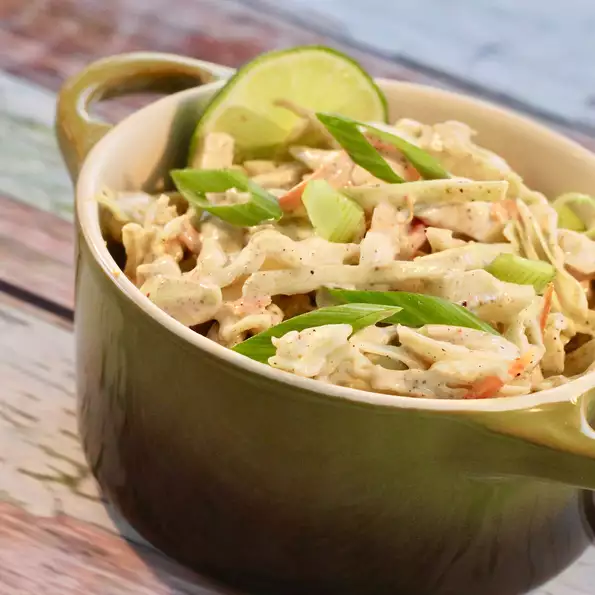

Coleslaw

A refreshing salad ideal to eat during the hot summer days
Ingredients
- 1 cup mayonnaise
- 1 tablespoon lime juice
- 1 tablespoon ground cumin
- 1 teaspoon cayenne pepper
- 1 teaspoon salt
- 1 teaspoon ground black pepper
- 1 medium head green cabbage, rinsed and very thinly sliced
- 1 large carrot, shredded
- 2 green onions, sliced
- 2 radishes, sliced
Directions
- In a large bowl, whisk together the mayonnaise, lime juice, cumin, salt and pepper. Add the cabbage, carrot, green onions and radishes and stir until well-combined. Chill at least an hour before serving.
Nutritional information
Per serving 236 calories; protein 2.1g; carbohydrates 9.4g; fat 22.2g; cholesterol 10.4mg; sodium 476mg.